春天，南荷蘭附近的17種常見鳥類
寫在前面：
作為一個能力有限的普通人，也不是會拿大砲追鳥的專業賞鳥人士，加上沒有厲害的相機可以捕捉鳥類們的身影，決定將這篇文章定調為「記錄我在荷蘭看到的鳥」就好，附圖會註明拍攝市鎮。
荷蘭的國土大台灣一點（而人口少台灣一點），而我主要活動於南荷蘭省(South Holland)一帶，其次是Utrecht，可不敢說這份紀錄能代表荷蘭全境，因此這個紀錄主要聚焦在「南荷蘭省」，紀錄時間為三月中至五月之間。
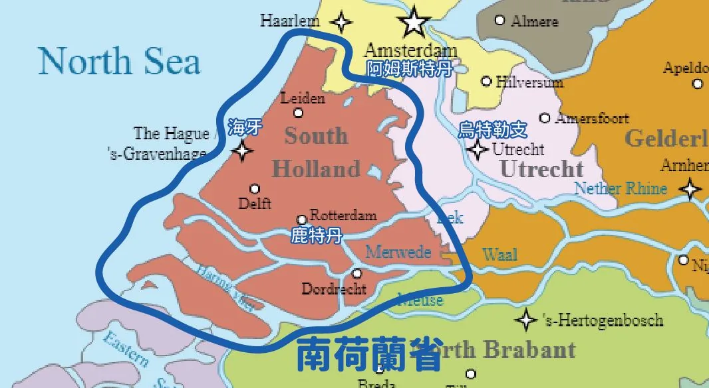
提到這裡，就不得不提「綠心計畫(Green Heart)」，簡單說就是在四大城市中間保留綠地，這裡不討論政策制定的前因後果，僅從居住的角度來說，有很近的地方可以舒服地騎腳踏車、在超市買到來自產地的新鮮蔬果，甚至可以直接去農家購買。許多文章會稱讚荷蘭人有遠見、懂得與自然共存，但或許更像是與自然爭地、多次交手（過去填海造陸，現在因為氣候變遷也持續面臨挑戰），所以知道打不贏就加入他們XD
除了保留的綠地，還有到處可見的運河，所以日常生活的生態便相當豐富，甚至可以說有點煩哈哈。
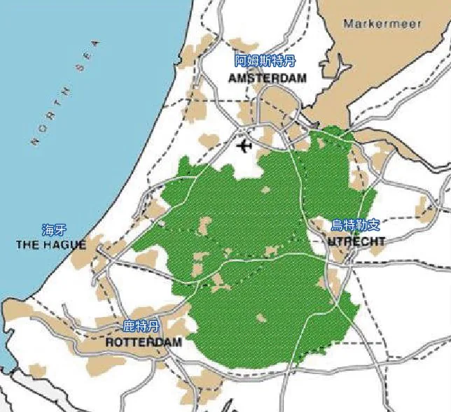
氾濫代表（#1~3）
1. 鴿子
沒錯！就是這個世界氾濫的鳥類，就我所知鴿子還有不同種類，這裡就跳過啦。
2. 寒鴉 Coloeus monedula／小嘴烏鴉 Corvus corone
寒鴉又稱西部寒鴉或歐亞寒鴉，有 4 種亞種。身體偏灰色、頭頂上有一塊特別黑，在陽光底下會非常明顯。
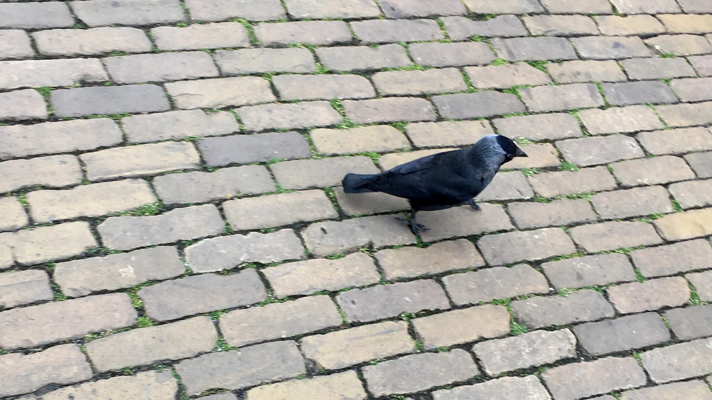
查照片時發現應該有另一種全黑的「小嘴烏鴉」，我每次看到都以為只是天氣不好才導致寒鴉看起來一整隻黑嚕嚕。小嘴烏鴉體型比寒鴉大一點點。
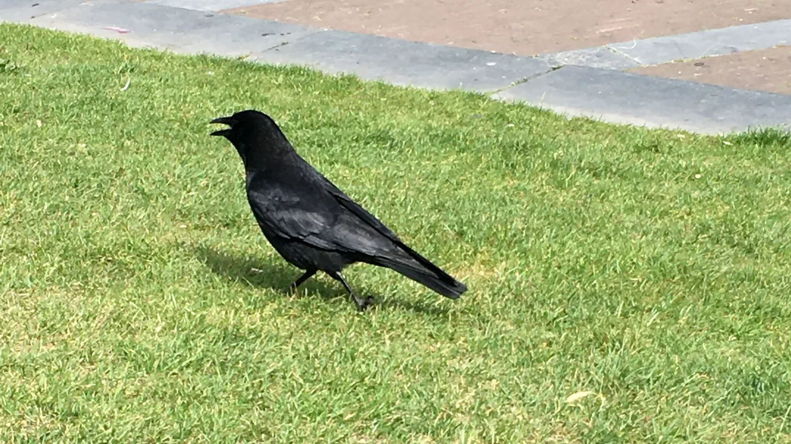
3. 海鷗
個人在荷蘭算少看到，會出現在城市街道和住宅公園，不過相關文章確實顯示海鷗在荷蘭之氾濫。我看到最多的時候是在義大利的城市裡，是超級強勢種，甚至會欺負鴿子。荷蘭的海鷗有很多種，我不知道我拍到的是哪一種……
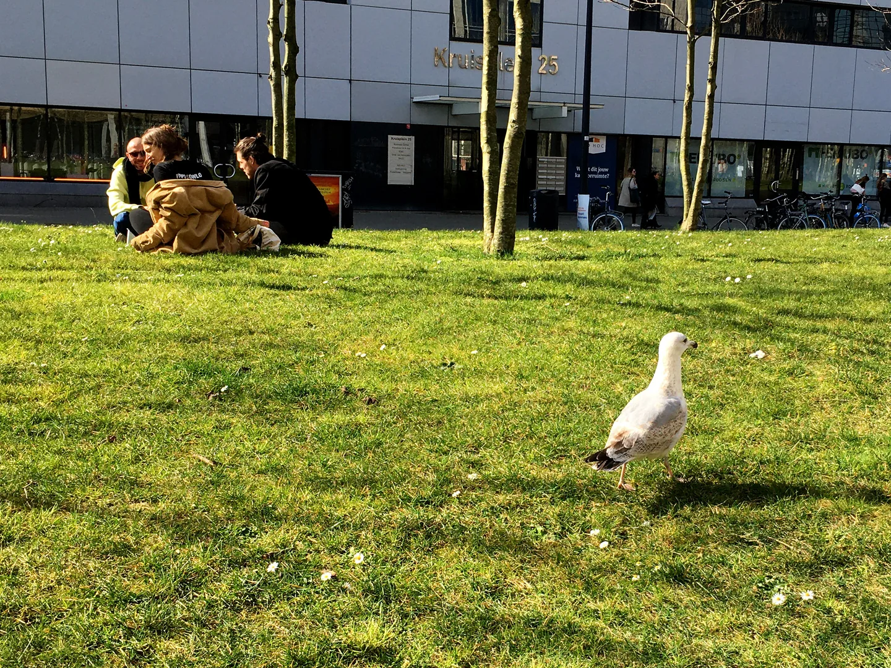
住宅區居民：路邊運河、公園看得到(#4~7)
4. 紅冠水雞 Gallinula chloropus
才剛抵達的第一天，就在住所附近公園碰到的熟悉好朋友，可能是因為當地很習慣跟人類共居，沒有台灣的那麼膽小。（在台灣：距離10公尺就開始退後；在荷蘭：3公尺）
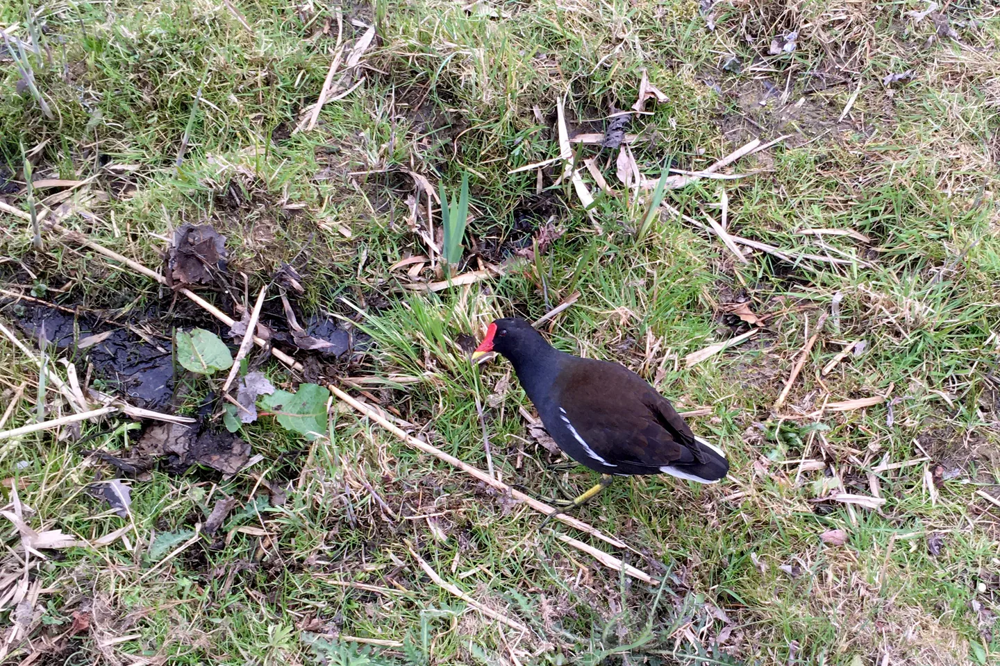
5. 白冠雞 Fulica atra
問了友人才知道台灣也有這個（屬於冬候鳥），而另一個曾居住法國的友人則稱他「使徒雞」，精美的白蓋頭形狀真的像極了《新世紀福音戰士》裡的使徒！數次看到運河裡的一小塊蘆葦雜草就是他的巢（有點難形容），覺得有點隨便啊～
於四月中之後，開始看到一隻成鳥帶著2隻左右的幼鳥，成鳥的眼睛是紅色的。
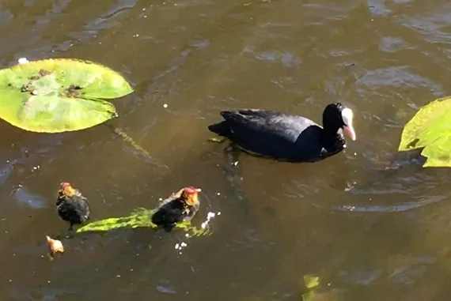
6. 綠頭鴨 Anas platyrhynchos
一樣是相當熟悉的好朋友，出現公園綠地運河。
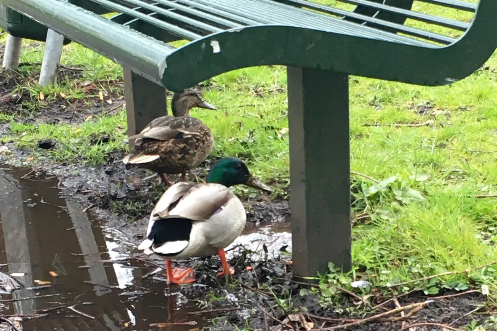
7. 灰鵝 Anser anser
ok，這絕對是「林北才沒有要跟你們人類和平共處」的鳥類代表。
灰雁雖然不至於少見，但沒有紅冠水雞、白冠水雞、綠頭鴨這麼常見於公園，感覺更常在房屋後、腳踏車道旁的寧靜河道裡（更遠離人類生活的感覺），偶爾會看到在水面上助跑起飛，又或者抬頭看到巨大的鳥在飛嚇一跳（在台灣很少看到這麼大型的鳥在飛啊）。
四月中後開始看到一個或幾個家庭一起出現在住宅區的公園和道路上，平均大概一對夫妻有4~6個孩子要帶，兩個家庭同時出現就會非常壯觀。因為育雛期，所以警覺性特別高，靠近一點點（約2公尺）就開始哈氣，我也解鎖了被灰鵝哈氣的成就(?)。育雛期比較靠近被凶可以體諒，在住家前面亂大便也沒關係，重點是不要帶著小孩站在別人家的門口擋路，還對住家的人類哈氣啊～～～（超無奈
荷蘭的灰鵝跟俗稱大笨鳥的黑冠麻鷺命運有點相像，40年前在荷蘭還是一種很稀有的候鳥，甚至怕他們消失而有放生活動，而現在已經超級氾濫，有些灰鵝也不遷徙了，直接落地生根。是不是跟黑冠麻鷺在台灣的族群發展史(?)很像呢～
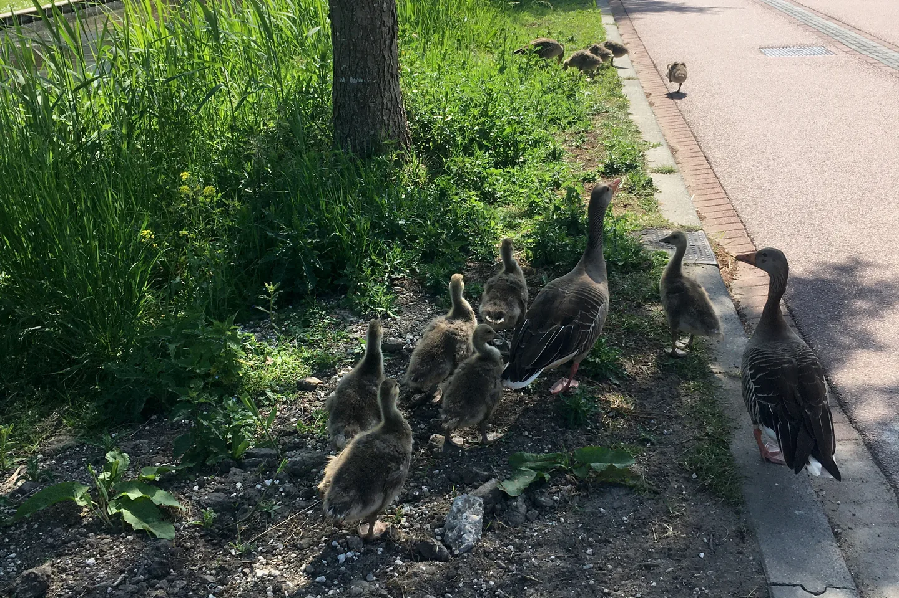
稍微少見的小鎮居民(#8~11)
8. 歐亞喜鵲 Pica pica
按學名查，台灣的叫做Pica serica，不過我在荷蘭看到時，完全覺得是同樣的物種（我分…不出來……） 在台灣的城市裡，喜鵲算相當常見，不過我沒有在荷蘭的城市裡見過。雖然出沒住宅區，不過也僅僅是在某特定幾戶人家的草坪上看到。
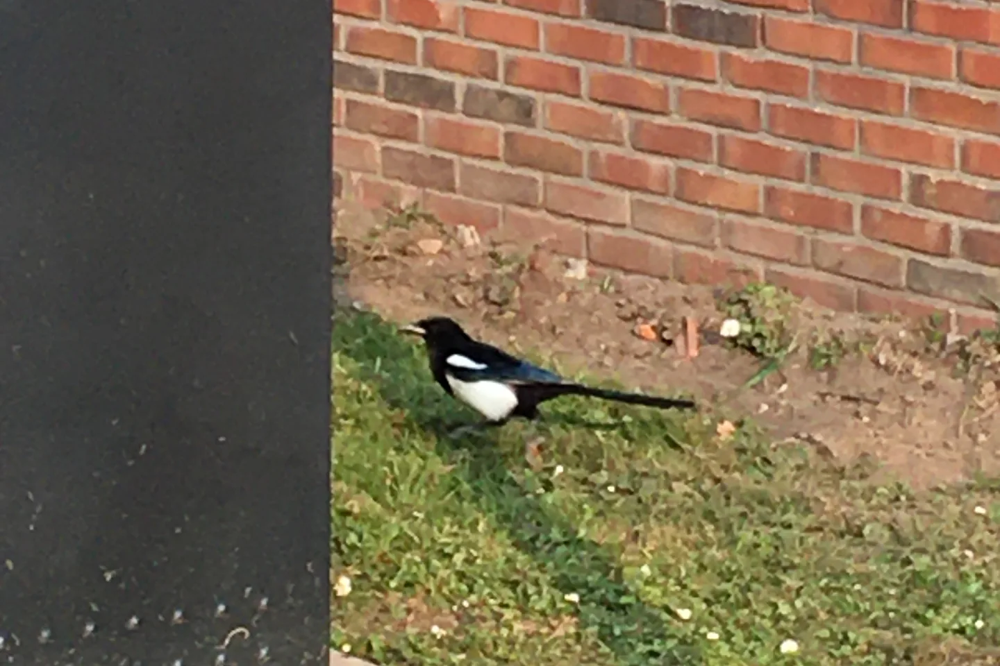
9. 天鵝 Cygnus olor
對台灣人來說，就是那個童話故事裡才會出現的生物，全名叫「疣鼻天鵝」。本鵝比想像中大得多，脖子很長，在住宅區主要幹道旁的水池草地旁看到，覺得非常違和（記憶中那麼優雅的生物出現在轟隆隆的路邊啊～）。雖然覺得不難遇到他，但數量明顯少於前面那幾種，可能只看過10隻左右。
當看到他們把頭埋進水十幾二十秒的模樣覺得異常搞笑。（憋氣大賽，開始！）
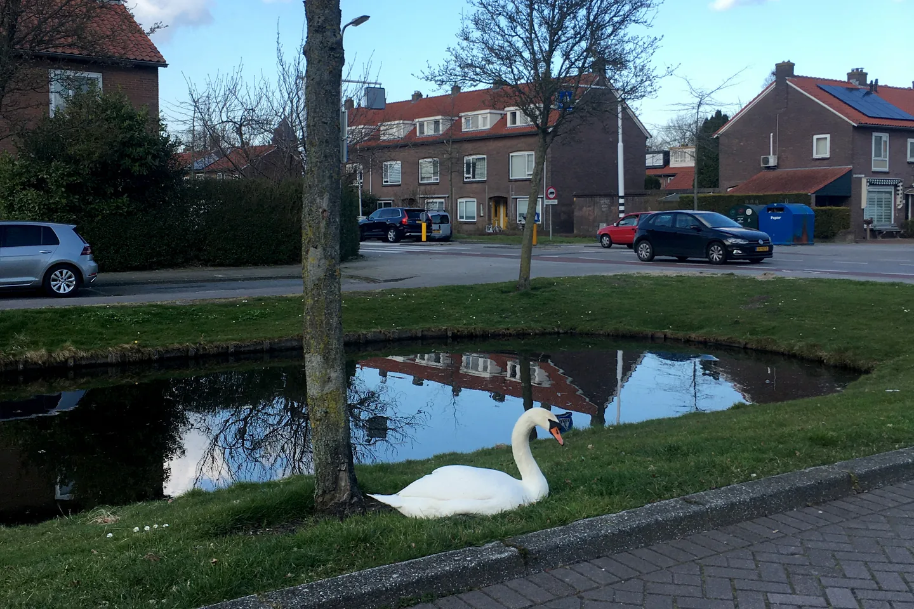
10. 蒼鷺 Ardea cinerea
又是個熟悉的好朋友了～看到時覺得很驚訝，大概看到5隻，非常安靜地站在水裡一動也不動，偶爾也會出現在公園。
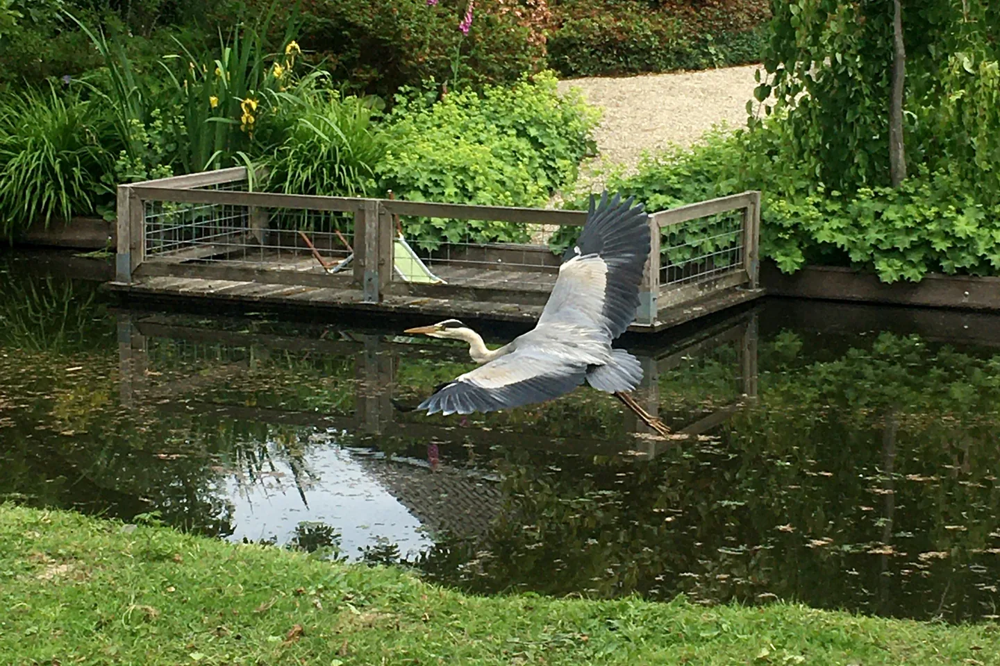
11. 埃及雁 Alopochen aegyptiacus
這隻大概遇到3-4次，長得很有特色，實在很難不記得。遇到的地點剛好都很分散，Breda大學的大公園以及Utrecht城市的大運河河堤，反倒是自己住所沒見過。
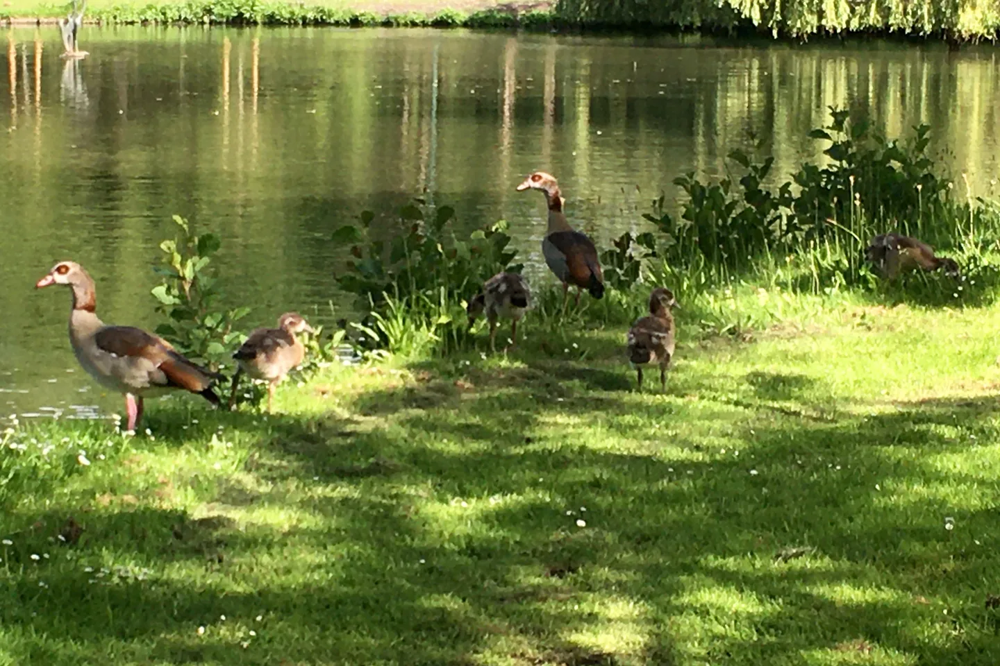
12. 蠣鴴／蠣鷸 Haematopus ostralegus
只看過2次，分別是在某住宅公寓的水塘（還養著幾隻鹿跟雞）以及住所前的運河旁草地上。距離超級遠又小，我只想稱讚自己火眼金睛。第一次看到覺得應該是鷸鳥類的，喙很長，看到的水塘有點像濕地那樣的環境，他的俗名oystercatcher(牡蠣捕食者)非常可愛直白，以貝類為主食。
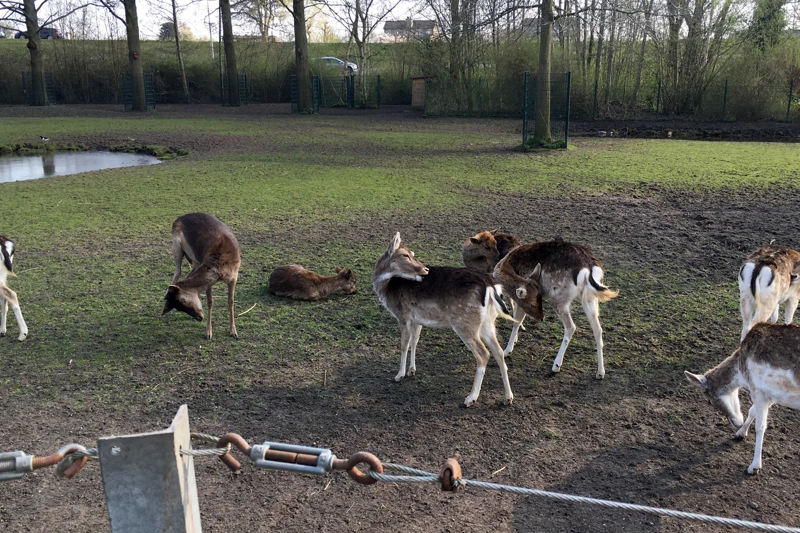
其他(#13~15)
13. 烏鶇 Turdus merula
是荷蘭最常見／知名的鳥類之一，號稱「在你家花園或街道一定有一隻」，是瑞典的國鳥。黑色的身體、黃色的眼眶，看到時覺得有點像八哥，但明顯不一樣啦我知道。在台灣名叫「鶇」的我只認識特有種「紫嘯鶇」，查了發現他們只有同樣是「雀形目」，烏鶇是鶇科，但紫嘯鶇是鶲科。
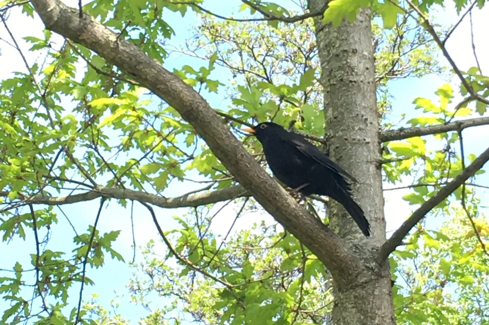
14. 歐洲椋鳥／歐洲八哥 Sturnus vulgaris
又名歐洲八哥，但長得跟我知道的八哥一點都不像啊～
麻雀或八哥體形的鳥我都很難注意到，因為很難拍照以及他們更加膽小，無法靠近觀察。會注意到這隻鳥，是在街道上看到，體型像麻雀（可能瘦長一些些），在陽光下閃閃發亮的藍綠色背部超吸引目光。
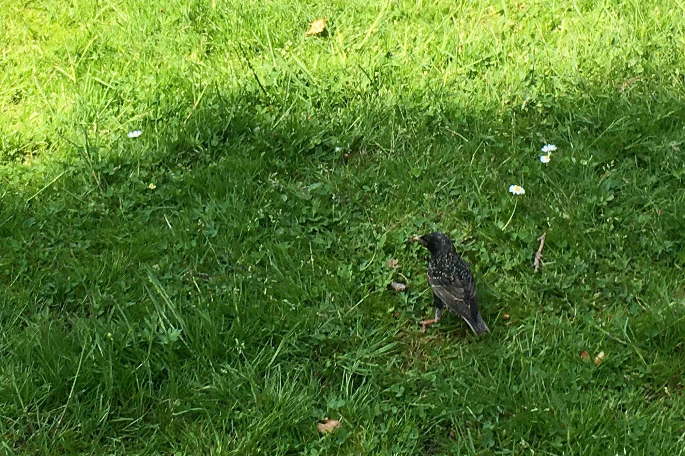
15. 紅領綠鸚鵡／玫瑰環鸚鵡 Psittacula krameri
到荷蘭一段時間後，我嘗試搜尋幾篇荷蘭常見鳥類的文章，看看有什麼「該看到但沒看到的」，發現有全身鮮綠色的鸚鵡覺得很酷。某次路過公園，抬頭看樹上發現一個綠色的屁股，我決定要聲稱我有看過這個傢伙哈哈哈！
挺不意外地是個寵物逸逃的例子，已經在野外有穩定族群。
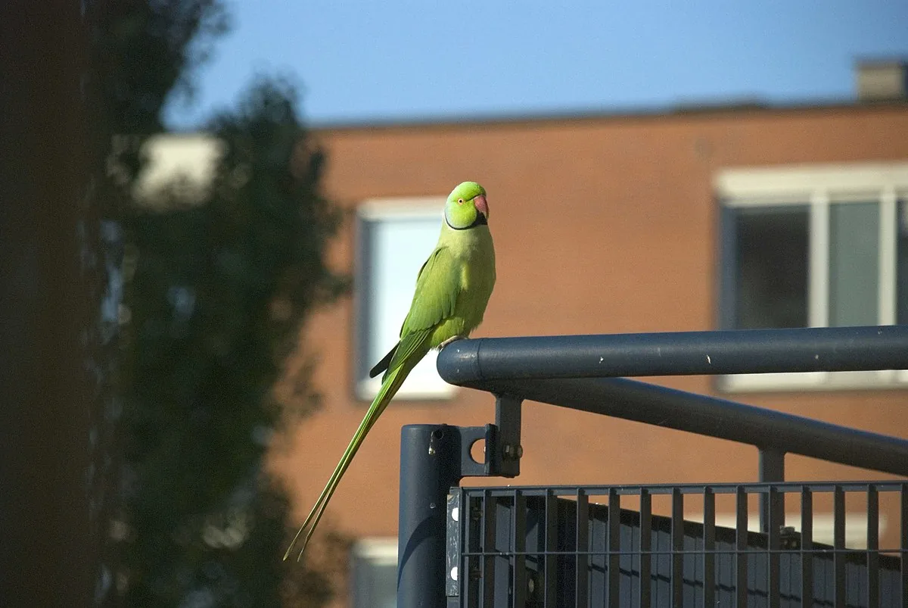
{kind=link}
16. 加拿大鵝 Branta canadensis
看到2次，1次是在城市的公園裡，另一次是在一個郊區（小孩堤防－很多風車的聯合國科教文組織認定世界遺產）的家庭。
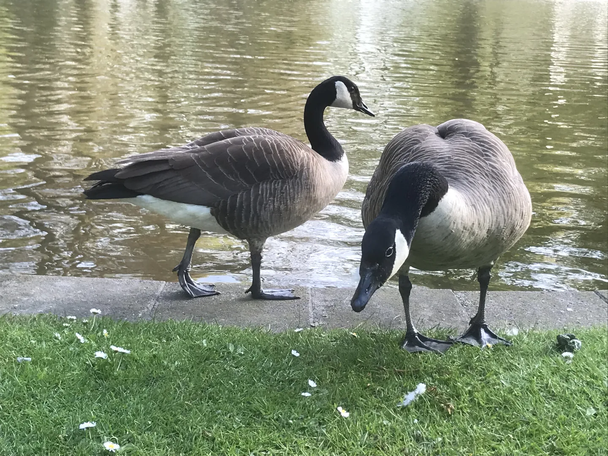
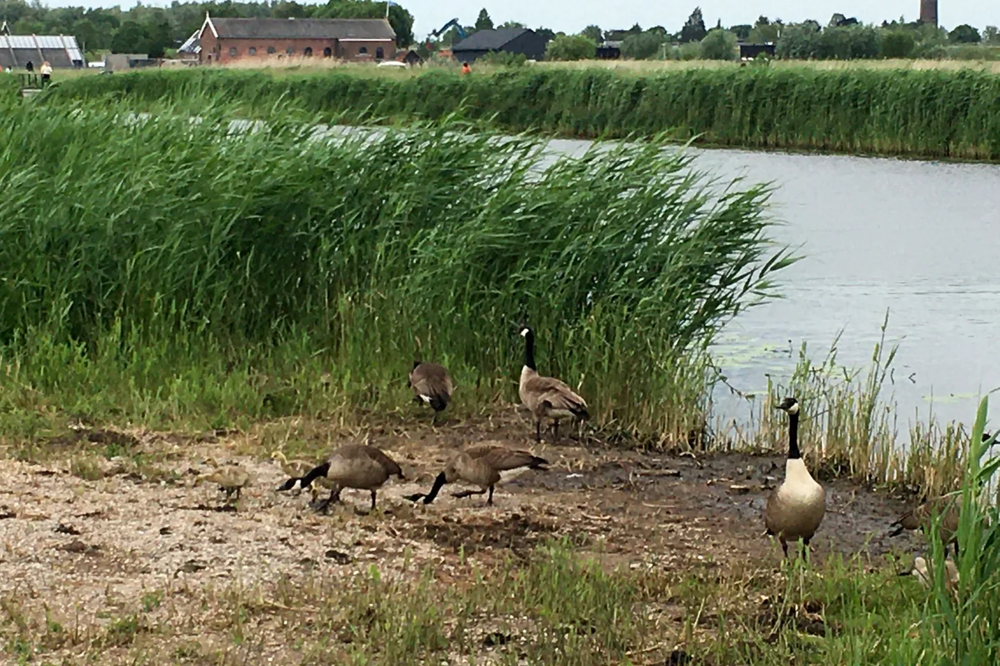
17. 歐歌鶇 Turdus philomelos
照片拍得太爛導致自己也辨識不出來，最後將照片上傳inaturalist經過網友確認為歐歌鶇（又是個鶇！），看到時是在路上走，而且靠近他他也不飛走，繼續用走的跑開。應該跟歐洲椋鳥一樣，其實公園裡應該很常見但他們太小又太快逃走。
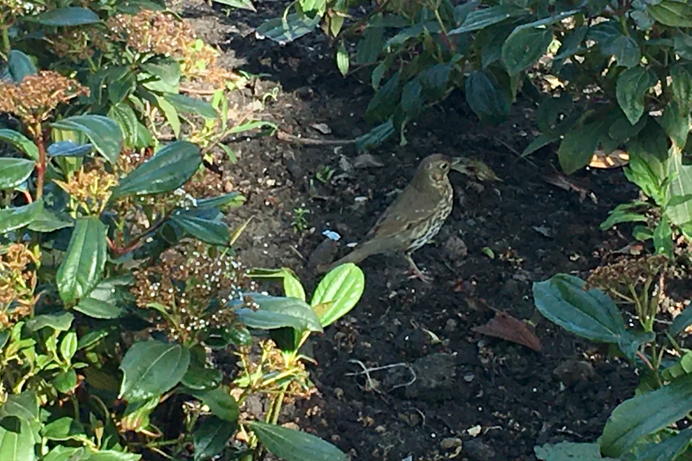
其中有些鳥類還有拍一些簡單的影片，但有點不知道該怎麼呈現會比較好。改天如果有隨意剪一剪就再補上連結。
任何敘述有誤都歡迎指正，最後覆蓋一張大學城公園裡的雞結束這回合！
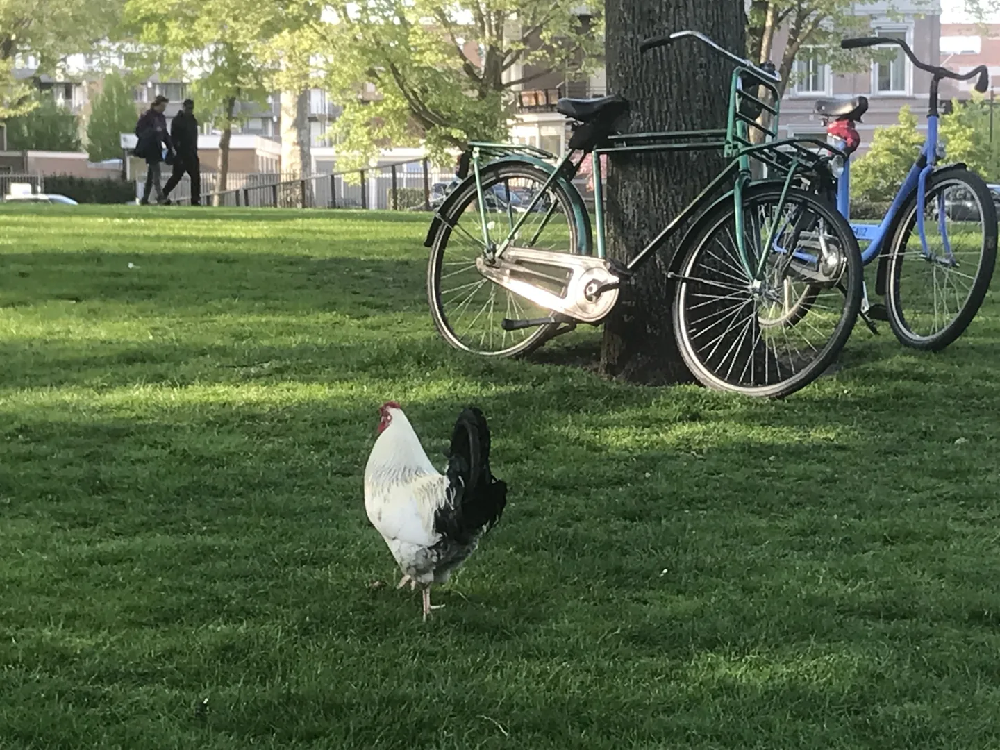